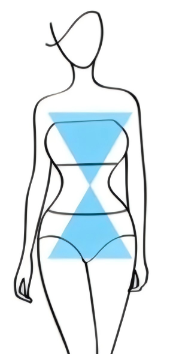

体型结论
X 型沙漏曲线
肩胯匀称、腰线明确，穿搭重点是突出比例，而不是继续堆叠曲线。
- 优势肩胯线条匀称，腰肢自带曲线感
- 重点用收腰款或细腰带突出腰线
分析依据
原始结论：X 型沙漏曲线款 | 自带黄金比例的“天生衣架子”。
优化重点：避免过度强调曲线，打造轻盈不臃肿的灵动线条。
版型选择：上半身简约利落，下半身可搭配微 A 摆裙，平衡整体比例。
面料建议：优选垂坠感面料，如雪纺、醋酸，避开硬挺材质。